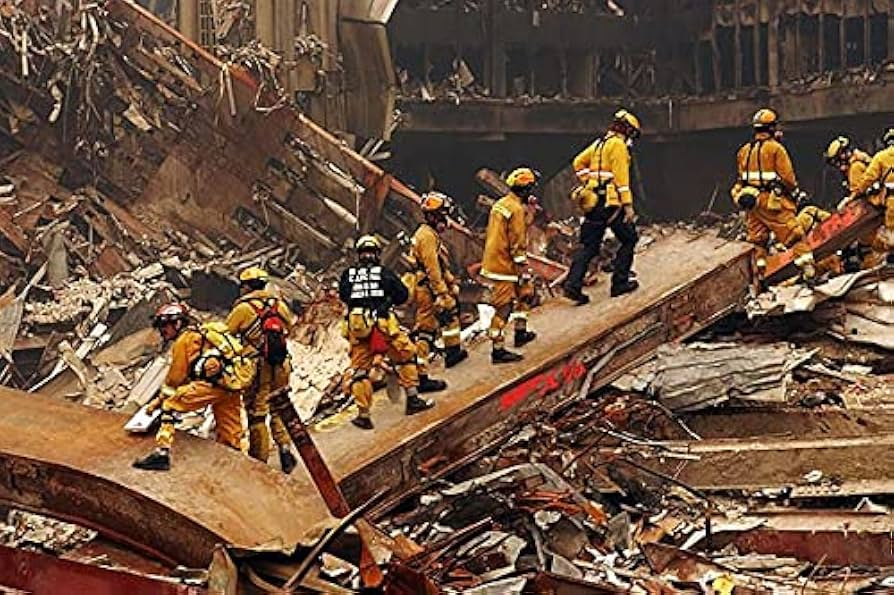
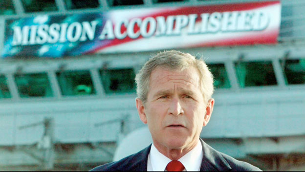
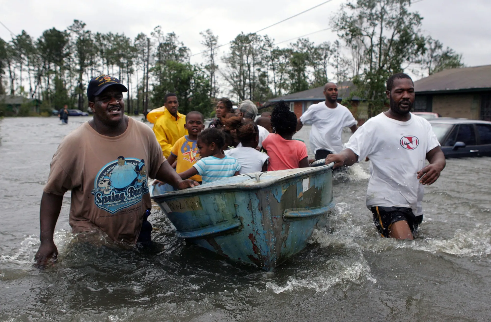
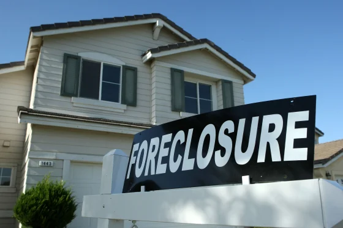
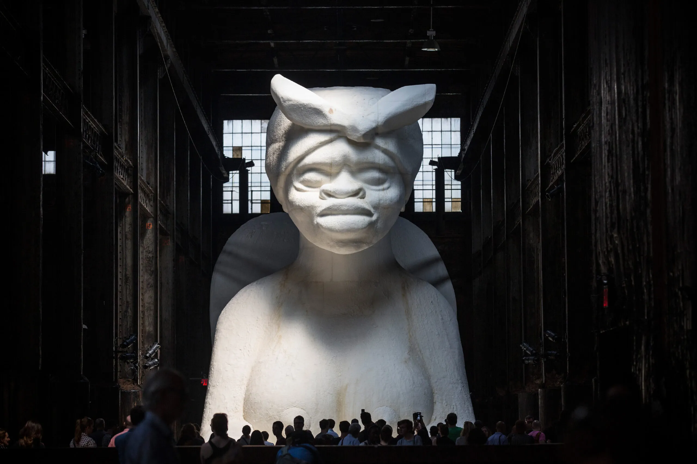
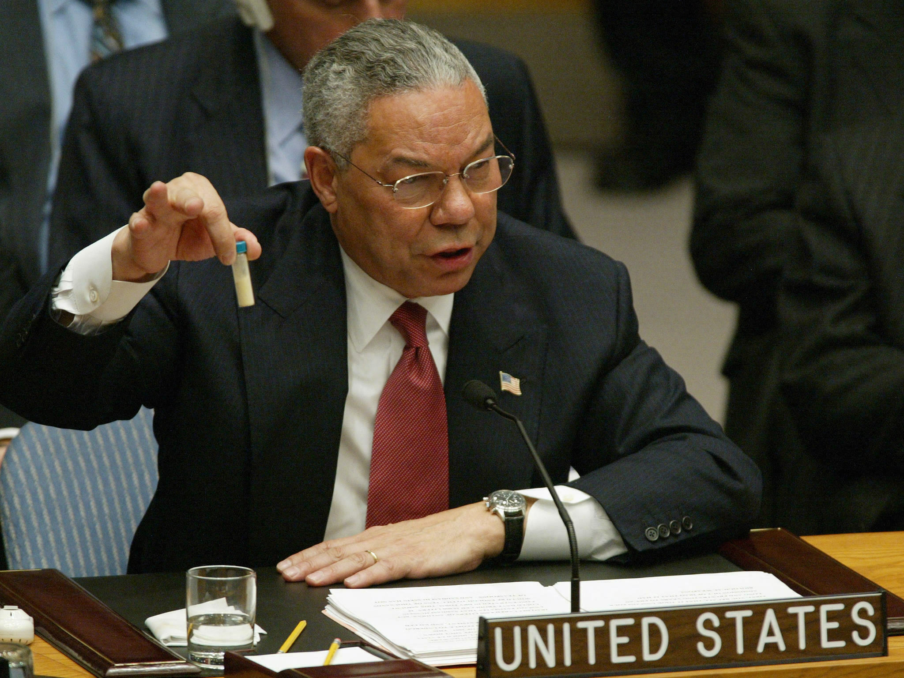
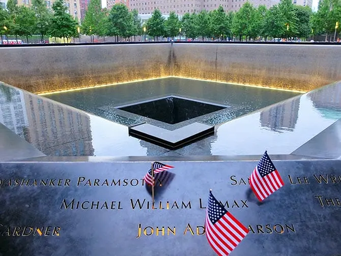
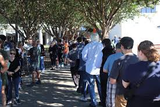

U.S. HISTORY • SEMESTER 2 • LESSON 09 • STANDARD 11.11
THE TRUST COLLAPSE
ESSENTIAL QUESTION
How did the promises made after September 11 turn into the anger that reshaped American politics by 2016?
FROM UNITY TO ANGER • 2001 TO 2016
2001
September 11 attacks. Congress passes the Patriot Act in 45 days. The country unifies around a War on Terror.
2003
U.S. invades Iraq citing weapons of mass destruction. None are ever found. The war lasts eight years and costs over $2 trillion.
2005
Hurricane Katrina floods New Orleans. The federal government's slow response leaves thousands stranded. Trust in government falls sharply.
2008
Financial crisis. The government bails out banks with $700 billion. Ten million families lose their homes. No executives go to prison.
2016
Donald Trump wins the presidency running against the political establishment, promising to drain "the swamp" in Washington.
On the morning of September 12, 2001, the day after the deadliest attack on American soil in history, something remarkable happened. Republicans and Democrats stood together on the steps of the Capitol and sang "God Bless America." Congress gave President Bush a 98 percent approval rating. Countries that had argued with the United States for years offered their sympathy, their intelligence, and their soldiers. For a brief moment, almost everyone in the world was on America's side.
On September 12, 2001, the day after the deadliest attack on American soil in history, something remarkable happened. Republicans and Democrats stood together on the Capitol steps and sang "God Bless America." President Bush received a 98 percent approval rating. Countries that had fought with the United States for years offered their help. For a moment, almost the entire world stood with America.
Fifteen years later, a reality television star and real-estate developer who had never held political office won the presidency by telling Americans that their government was corrupt, incompetent, and working against them. He called it a "swamp." Millions of Americans agreed. The question this lesson asks is simple: what happened in between? The answer is a story about promises made and broken, wars launched on false information, disasters mishandled, and a financial system that collapsed and was rescued in ways that protected the powerful and abandoned everyone else.
Fifteen years later, a man who had never held political office won the presidency by telling Americans that their government was corrupt and working against them. Millions of Americans agreed. The question this lesson asks is simple: what happened in between? The answer is a story about broken promises, wars launched on false information, disasters mishandled, and a financial system that collapsed and was rescued in a way that helped the powerful while millions of ordinary Americans lost their homes.
CHAPTER ONE
SEPTEMBER 11: UNITY, FEAR, AND THE TRADE-OFF

Rescue workers at Ground Zero, September 2001. The attacks killed 2,977 people. In the days that followed, the country unified behind a demand for justice. Source: Wikimedia Commons.
On September 11, 2001, nineteen hijackers affiliated with al-QaedaAn extremist terrorist organization founded by Osama bin Laden that planned and carried out the September 11 attacks. flew commercial airplanes into the World Trade Center in New York City, the Pentagon in Virginia, and a field in Shanksville, Pennsylvania. Nearly 3,000 people were killed in a matter of hours. It was the deadliest attack on American soil since Pearl Harbor. The emotional shock was unlike anything most living Americans had experienced.
On September 11, 2001, nineteen hijackers connected to al-QaedaAn extremist terrorist organization founded by Osama bin Laden that planned and carried out the September 11 attacks. flew planes into the World Trade Center, the Pentagon, and a field in Pennsylvania. Nearly 3,000 people died in a matter of hours. It was the deadliest attack on American soil since Pearl Harbor. The shock was unlike anything most Americans had ever experienced.
The government's response was fast and enormous. Congress passed the Patriot ActA law passed 45 days after September 11 that greatly expanded the government's power to surveil citizens, monitor communications, and detain suspects in terrorism cases. just 45 days after the attacks, with almost no public debate. The law gave the government broad new powers to monitor phone calls, emails, and financial records — not just of terrorism suspects, but of ordinary American citizens. The NSAThe National Security Agency, a U.S. intelligence agency that collected and analyzed massive amounts of communication data, including from American citizens, after September 11. secretly collected the phone records of millions of Americans who had no connection to terrorism. The people most targeted for surveillance were Muslim Americans, Arab Americans, and South Asian Americans.
Congress passed the Patriot ActA law passed 45 days after September 11 that greatly expanded the government's power to surveil citizens, monitor communications, and detain suspects in terrorism cases. only 45 days after the attacks, with almost no public debate. The law gave the government new powers to monitor phone calls, emails, and financial records of American citizens. The government secretly collected phone records from millions of Americans who had nothing to do with terrorism. Muslim Americans, Arab Americans, and South Asian Americans were the most heavily targeted communities.
Most Americans accepted the trade-off at the time: give the government more power, gain more safety. The problem was that nobody had agreed on where the trade-off ended. How much civil libertiesThe basic rights and freedoms that protect individuals from government overreach, such as freedom of speech, privacy, and protection from unlawful searches. could be exchanged for how much security? Who would decide? And who would bear the cost when the new powers were used not on terrorists, but on ordinary people who happened to share a religion or ethnicity with the attackers? These questions were not answered in the fall of 2001. They are still not fully answered today.
Most Americans accepted this trade-off at the time: give the government more power, gain more safety. But nobody agreed on where that trade-off would end. How much of your civil libertiesThe basic rights and freedoms that protect individuals from government overreach, such as freedom of speech, privacy, and protection from unlawful searches. should you give up for safety? Who pays the cost when those new powers are used not on terrorists but on innocent people? These questions were not answered in 2001. They are still not fully answered today.
DID YOU KNOW
In 2013, a government contractor named Edward Snowden revealed that the NSA had secretly collected phone and internet data from hundreds of millions of ordinary Americans for years after September 11. The program had been approved by secret courts, never debated publicly, and kept hidden from most of Congress. When Snowden leaked the documents, the government charged him with espionage. He has lived in exile in Russia ever since. The surveillance he exposed was ruled unconstitutional by a federal court in 2020 — nearly two decades after it began.
CHAPTER TWO
THE WAR: PROMISES, LIES, AND COSTS

President Bush on the USS Abraham Lincoln, May 1, 2003. The "Mission Accomplished" banner became a symbol of how badly the government misread the war. The fighting in Iraq continued for eight more years. Source: Wikimedia Commons / U.S. Navy.
The war that followed September 11 had two phases that told very different stories. The first was the invasion of Afghanistan in October 2001 to destroy al-Qaeda and remove the TalibanThe extremist political and religious group that governed Afghanistan and provided shelter to al-Qaeda before the 2001 U.S. invasion. government that had sheltered them. It was widely supported and achieved its initial military goals quickly. The second phase was something else entirely.
The war that followed September 11 had two parts. The first was the invasion of Afghanistan in October 2001 to destroy al-Qaeda and remove the TalibanThe extremist political and religious group that governed Afghanistan and provided shelter to al-Qaeda before the 2001 U.S. invasion. government that had protected them. Most Americans supported it. The second part was a very different story.
In March 2003, the United States invaded Iraq. The Bush administration told Congress, the American public, and the United Nations that Saddam Hussein possessed weapons of mass destructionNuclear, chemical, or biological weapons capable of killing large numbers of people; the claimed justification for the 2003 invasion of Iraq. that posed an immediate threat to the United States. Secretary of State Colin Powell presented this intelligence to the United Nations in a speech that was later described as one of the most consequential mistakes in diplomatic history. The weapons were never found, because they did not exist.
In March 2003, the United States invaded Iraq. The Bush administration told Congress, the public, and the United Nations that Iraq had weapons of mass destructionNuclear, chemical, or biological weapons capable of killing large numbers of people; the claimed justification for the 2003 invasion of Iraq. that threatened the United States. Secretary of State Colin Powell made this case to the United Nations in a famous speech. The weapons were never found. They did not exist.
The Iraq war lasted eight years and produced consequences that are still unfolding today. More than 4,400 American soldiers died. Estimates of Iraqi civilian deaths range from 150,000 to over 600,000. The war cost over $2 trillion, much of it borrowed. It destabilized the Middle East, created a power vacuum that helped give rise to ISISThe Islamic State, an extremist organization that filled the power vacuum left after the Iraq war and seized large parts of Iraq and Syria., and produced a refugee crisis that spread across the region. On May 1, 2003 — before most of the dying had even begun — President Bush stood on an aircraft carrier under a banner that read "Mission Accomplished." It became the most scorned image of the war.
The Iraq war lasted eight years. More than 4,400 American soldiers died. Hundreds of thousands of Iraqi civilians died. The war cost over $2 trillion, much of it borrowed. It destabilized the region and helped create ISISThe Islamic State, an extremist organization that filled the power vacuum left after the Iraq war and seized large parts of Iraq and Syria.. On May 1, 2003, before most of the dying had even begun, President Bush stood on an aircraft carrier under a banner that read "Mission Accomplished." It became the most mocked image of the entire war.
The gap between what the government had promised and what actually happened was enormous. Americans had been told the war would be short, the weapons would be found, and the region would be stabilized. None of it was true. For millions of Americans, the Iraq War was the first major crack in the idea that their government told them the truth about things that mattered.
The gap between what the government promised and what actually happened was huge. Americans had been told the war would be short, the weapons would be found, and the region would stabilize. None of it was true. For millions of Americans, the Iraq War was the first major crack in the idea that their government was honest with them.
FAST FACTS
THE COSTS THAT BUILT THE ANGER
$6Ttotal estimated cost of the Iraq and Afghanistan wars including interest on borrowed money — roughly $20,000 for every single American
4,431U.S. soldiers killed in Iraq between 2003 and 2011, after a war justified by weapons that were never found
10MAmerican households that lost their homes to foreclosure after the 2008 financial crisis — while the banks that caused the crisis were bailed out
0major Wall Street executives who went to prison following the 2008 financial crisis, despite investigations finding widespread fraud
CHAPTER THREE
LEFT BEHIND: KATRINA, THE CRASH, AND WHO THE GOVERNMENT HELPED

Survivors stranded in New Orleans, August 2005. The majority were elderly, poor, or did not have cars. The vast majority were Black. Help took days to arrive. Source: Wikimedia Commons.

A foreclosed home during the 2008 financial crisis. Approximately 10 million American households lost their homes while the banks that caused the crisis received a $700 billion government bailout. Source: Wikimedia Commons.
Hurricane Katrina made landfall on August 29, 2005 and flooded 80 percent of New Orleans, killing approximately 1,800 people. What the storm revealed was not a natural disaster in isolation: it revealed which Americans the government would prioritize when a crisis hit. The people stranded on rooftops for days, waiting at the Convention Center without food or water, dying in nursing homes — the majority were elderly, poor, or did not own cars. The vast majority were Black. The FEMAThe Federal Emergency Management Agency, the government agency responsible for coordinating disaster response — widely criticized for its slow and disorganized response to Hurricane Katrina. response was so slow and disorganized that the agency became a symbol of government failure. Katrina made visible something that Black Americans had long known: the question of who the government protected depended heavily on who you were.
Hurricane Katrina hit New Orleans on August 29, 2005 and flooded 80 percent of the city, killing about 1,800 people. The storm revealed something about who the government prioritized. The people stranded on rooftops for days, waiting at the Convention Center with no food or water — the majority were elderly, poor, or did not own cars. The vast majority were Black. FEMAThe Federal Emergency Management Agency, the government agency responsible for coordinating disaster response — widely criticized for its slow and disorganized response to Hurricane Katrina.'s response was so slow and disorganized it became a symbol of government failure. Katrina made something visible that Black Americans had long known: who the government protected depended on who you were.
Three years later, in 2008, the financial crisisThe collapse of the U.S. housing and financial markets in 2008, triggered by risky mortgage lending and financial speculation that caused the worst recession since the Great Depression. handed Americans a second lesson in the same subject. The collapse had been caused by years of risky and often fraudulent lending by major banks and financial institutions. When the system collapsed, Congress approved a $700 billion taxpayer-funded bailout to rescue those institutions. The banks that had caused the crisis were saved. The 10 million American families who lost their homes to foreclosure were not. Not a single major Wall Street executive went to prison. The contrast was not subtle, and it was not forgotten.
Three years later, in 2008, the financial crisisThe collapse of the U.S. housing and financial markets in 2008, triggered by risky mortgage lending and financial speculation that caused the worst recession since the Great Depression. taught Americans the same lesson again. The collapse was caused by risky and often fraudulent behavior by major banks. When the system failed, the government gave those banks a $700 billion bailout. The banks that caused the crisis were saved. The 10 million families who lost their homes were not. Not one major Wall Street executive went to prison. This contrast was not subtle, and millions of Americans did not forget it.
ART SPOTLIGHT

"A Subtlety, or the Marvelous Sugar Baby" — Kara Walker, 2014
Walker created this 75-foot sugar sphinx inside the soon-to-be-demolished Domino Sugar Refinery in Brooklyn, New York, addressing the history of slavery, sugar, and the labor of Black Americans.
Walker installed the massive sugar sphinx inside the Domino Refinery for only seven weeks before the building was torn down. Hundreds of thousands of people lined up to see it. Walker has said she chose sugar deliberately because the sugar trade was one of the primary economic engines of American slavery — and because sugar dissolves. The entire structure was melted down after the exhibition closed, leaving nothing behind except photographs and the questions it raised about what American history preserves and what it destroys.
CHAPTER FOUR
THE ROAD TO 2016: WHEN ANGER BECAME A CANDIDATE
A Donald Trump campaign rally, 2015-2016. Trump drew enormous crowds by promising to challenge the political establishment that many Americans blamed for the failures of the previous fifteen years. Source: Wikimedia Commons.
By 2015, fifteen years of accumulated grievances had no political outlet that felt real to a large portion of the American public. The political establishment — both Republican and Democratic — had supported the Iraq War, passed the bank bailout, expanded government surveillance, and presided over an economy that had largely recovered for the wealthy and left everyone else further behind. Wage stagnationA long period during which workers' paychecks stopped growing even as the economy expanded — meaning the benefits of growth went to the wealthy while working-class incomes stayed flat. had hollowed out the middle class for decades. Manufacturing jobs that had supported working-class communities had moved overseas through globalization. The communities left behind did not feel like their concerns were taken seriously by either party in Washington.
By 2015, fifteen years of disappointments had no real political outlet for many Americans. Both political parties had supported the Iraq War, passed the bank bailout, and expanded surveillance. The economy had recovered for wealthy Americans but left working-class families further behind. Wage stagnationA long period during which workers' paychecks stopped growing even as the economy expanded — meaning the benefits of growth went to the wealthy while working-class incomes stayed flat. had hurt the middle class for decades. Manufacturing jobs had moved overseas. Many communities felt ignored by both parties in Washington.
Donald Trump named what many people already felt. He called Washington a "swamp" populated by corrupt politicians who worked for donors and lobbyists, not ordinary Americans. He described the trade deals that had moved manufacturing overseas as disasters for American workers. He attacked the Iraq War as a fraud — which, on the matter of weapons of mass destruction, it had been. He promised to put America first and to make the country feel powerful again for people who felt it had stopped working for them. The message resonated not because it was new, but because the grievances underneath it were real.
Donald Trump gave a name to what many people already felt. He called Washington a "swamp" of corrupt politicians working for donors, not ordinary Americans. He said the trade deals that moved jobs overseas were disasters for workers. He attacked the Iraq War as a fraud — and on the question of weapons of mass destruction, he was right. He promised to put America first and to make the country work again for people who felt it had stopped working for them. His message resonated because the anger underneath it was real.
Trump lost the popular vote by nearly 3 million votes but won the Electoral College and the presidency. His victory was not a single cause — it reflected economic anxiety, racial resentment, cultural backlash, and distrust of institutions all at once. But the thread running through it was something that had been building since 2001: a deep, accumulated conviction that the people in charge were not honest, not competent, and not working in the interests of ordinary Americans. That conviction had evidence behind it. The question 2016 raised — and still has not resolved — is what a democracy does when large numbers of its citizens stop trusting its institutions.
Trump lost the popular vote by nearly 3 million votes but won the presidency through the Electoral College. His victory came from many causes at once: economic anxiety, racial resentment, cultural backlash, and distrust of government. But the thread running through all of it was something built up since 2001: a deep conviction that the people in charge were not honest, not competent, and not working for ordinary Americans. That conviction had real evidence behind it. The question 2016 raised — and has not resolved — is what a democracy does when many of its citizens stop trusting its institutions.
PRIMARY SOURCE MOMENT

Secretary of State Colin Powell presents intelligence to the UN Security Council, February 5, 2003. He later called the speech a "blot" on his record. Source: Wikimedia Commons / U.S. State Department.
"My colleagues, every statement I make today is backed up by sources, solid sources. These are not assertions. What we're giving you are facts and conclusions based on solid intelligence... The gravity of this moment is matched by the gravity of the threat that Iraq's weapons of mass destruction pose to the world."
— Secretary of State Colin Powell, Address to the United Nations Security Council, February 5, 2003
WHY THIS MATTERS: Powell is making the case to the world that invading Iraq is necessary because of weapons that, as we now know, did not exist. Notice his language: he is not saying "we believe" or "intelligence suggests" — he is saying "facts." He is staking his reputation and America's credibility on information that was wrong. Powell later said this speech was "a blot" on his record and the biggest mistake of his career. When you read this, ask: what happens to a government's credibility when it presents false information as certain fact to justify a war that kills hundreds of thousands of people?
THEN AND NOW
THE TRUST LOST BETWEEN 2001 AND 2016 DID NOT DISAPPEAR AFTER 2016. IT BECAME THE WATER AMERICAN POLITICS SWIMS IN.
2001

The 9/11 Memorial reflecting pools, New York City. The site where unity began — and where the questions that followed were never fully answered. Source: Wikimedia Commons.
NOW

Americans voting in a recent election. The democratic system that 9/11, the Iraq War, Katrina, and the financial crisis all tested is still the mechanism through which Americans make their most consequential decisions. Source: CC license.
THEN
On September 12, 2001, the United States had more goodwill, more unity, and more international support than at almost any other moment in its modern history. The country had just been attacked. It had a clear enemy. Both parties agreed on the response. The question was what the government would do with that unity — and whether the decisions made in the next fifteen years would justify the trust Americans placed in their institutions at that moment.
NOW
Today, trust in the federal government sits near historic lows. Fewer than 20 percent of Americans say they trust the government to do what is right most of the time — a number that has fallen steadily since 2001. Americans still vote, still organize, and still fight for change through democratic institutions. But they do so inside a political environment shaped by the accumulated failures of those institutions over fifteen years: the surveillance, the weapons that were never found, the people left on rooftops, the banks that were bailed out, and the executives who faced no consequences.
CONNECTION
The through-line from September 11 to 2016 is not complicated. Each chapter of this lesson added one more layer of evidence for the same conclusion: that the government was willing to use its power to protect itself and its allies, and less willing to use that power to protect ordinary Americans. That conclusion was not invented by Donald Trump. He recognized it, named it, and ran on it. The anger was real before he arrived. The question this era leaves open is whether democratic institutions can rebuild trust once it has been lost at this scale.
If you had lived through all four of these events — the Patriot Act, the Iraq War, Katrina, and the financial crisis — do you think your trust in government would be higher or lower than your grandparents' generation? What would it take to earn that trust back?